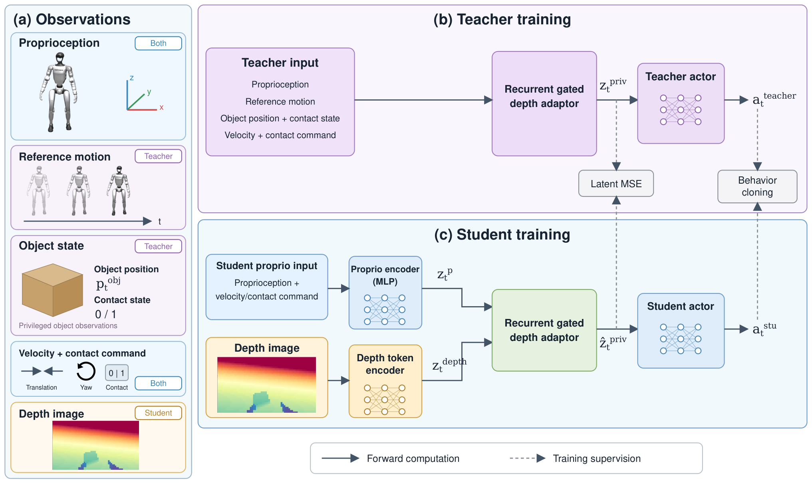
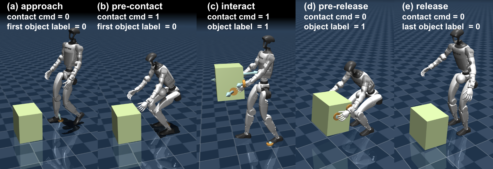
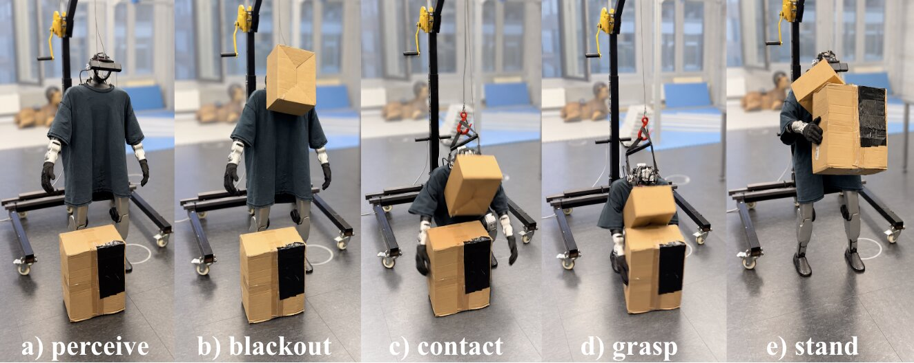

Contents · 8 sections
1What problem is it actually solving?2The overall pipeline: first teach a teacher who can see the answers, then teach a student3How does the student get through when it cannot see clearly?4Why are training tricks still needed?5What do the results show?6Where I think it falls short7How a robotics team could try it8VerdictSHARE
When a humanoid robot reaches for a box, the box blocks its head depth camera as soon as the hands get close, yet the controller still has to finish the whole sequence of picking up, carrying and putting down. This paper's approach: let the robot act mainly through the joint-state pathway, treat the depth image only as a correction scaled by learned gates, designed to let less of it in when the image is unreliable. Information gathered over earlier frames is kept in the memory of recurrent layers, so it is not lost the moment the image drops out. In simulation it picks up static boxes 85.2% of the time, against 48.5% for VisualMimic under the same protocol; with a laterally moving box the success rate is 85.9%. On a real Unitree G1, after the camera saw the box once and was then completely covered, the robot still grasped the box.
What problem is it actually solving?
Start with a scenario (illustrative). A box sits 0.3 m to the robot's front left, and the user presses the "go grab" command. The robot walks up, bends and reaches, and over these few seconds the head camera's view changes a lot:
| Stage (illustrative) | What the camera sees | What joint states tell the controller |
|---|---|---|
| Approach | The whole box, position clear | Where the body is heading |
| Reach | The arms block part of the box | Where the hands are |
| Lift | The box is against the body, the image is almost useless | How joint positions and velocities change under load, indirect evidence of a grasp |
| Camera covered | All black | Still available as usual |
If the controller trusts every frame equally, the last two rows will lead it astray. Many existing systems attach motion capture or a separate object-pose estimator that feeds the box position to the controller, which is hard to deploy outside the lab. This paper wants to use only sensors on the robot itself: a head depth camera plus joint states.
The overall pipeline: first teach a teacher who can see the answers, then teach a student
The paper uses the two-stage teacher–student training common in robot learning.

| Stage | Who | What it can access | What it learns |
|---|---|---|---|
| Stage one | Teacher | The box's true position, contact information and reference motions in simulation | The whole carrying motion, via reinforcement learning |
| Stage two | Student | Only joint states, depth images and user commands | To imitate the teacher's actions and to estimate, from its own inputs, the box information the teacher had |
While the teacher is trained in stage one, the student's estimation module is already warmed up with all depth features set to zero, so it first learns to estimate box information from joint states alone. In stage two the student's action network, besides imitating the teacher, is further fine-tuned with reinforcement learning. The teacher exists only during training in simulation. Only the student is deployed on the real robot, and it gets no true state at all. The user commands include walking speed, turning speed and a switch for "should the hands touch the box".
How does the student get through when it cannot see clearly?
The student's key part is a recurrent module the paper calls the recurrent gated fusion adapter. At every step it does three things.
First, the depth image is augmented with pixel coordinates and passed through a convolutional network and a recurrent layer that remembers the previous frames, producing a set of image tokens, each corresponding to a region of the image.
Second, joint states and user commands are encoded into a vector, which is used to run attention over these image tokens and find which regions matter most at the current stage of the motion. Asking with the joint states makes sense: different stages need different parts of the image, for example where the box is during the approach, and what to ask depends on what the robot is doing right now.
Third, the retrieved image information passes through hierarchical gates before it is added back to the joint-state pathway. There are two levels: the first decides how much of each attention head's image information to keep, the second decides how much of the whole image correction to add back. According to Figure 3 of the paper, the module concatenates this step's joint-state feature with the attention scores and feeds the result into two linear layers, each followed by a sigmoid. This gives one gate value for each of the 8 heads and one overall gate value, all between 0 and 1. Because the inputs change at every step, the gate values are recomputed at every step. The weights of the two linear layers are learned during training. The gated image correction is added directly to the joint-state feature, and LayerNorm is applied to the sum. When the overall gate is 0, the added part is also 0, so only the joint-state pathway remains. The paper follows prior gated-fusion work here and warns that the gate values are learned for the task, so they should not be read as a measure of sensor reliability. The gates, the image encoder and the second recurrent layer are trained only by the student's estimation losses; the loss for imitating the teacher's actions does not change them.
There is also a small prediction head that looks only at the image, not at joint states, and during training it predicts where the box is in the image. This forces the image features to learn to locate the box on their own instead of leaning on the joint states.
The fused result is not handed to the action network directly. It first predicts three things: the box's state, the box's point cloud in space, and whether the two hands are really touching the box. The point cloud means the points of the whole box placed at the box's current pose, so it stands for the entire box, not only the side the camera sees. Only the point-cloud and contact predictions, together with joint states and commands, enter a second recurrent layer, which produces the state representation given to the action network. So information from the image must first become "where the box is and whether it is touched" before it can affect actions. The two recurrent layers each handle one part. The first sits on the image side and carries image features from previous frames into the current one. The second comes after the predictions and combines joint states, commands, the point-cloud and contact predictions, together with its own memory from the previous step, into the state representation given to the action network. The three prediction heads see only the current step's fused result and do not read the second recurrent layer's memory. The second recurrent layer is trained by the alignment term among them: its output must match the teacher's representation. The teacher's representation comes from the teacher's own encoder, which uses quantities only simulation has: the reference motion, the box's true state and contact information. This encoder is trained in stage one and frozen in stage two. So once the image drops out, the current step's point-cloud and contact predictions do not automatically "remember" the box: with the gates closed they can rely only on the joint-state pathway. History is kept by the two recurrent layers, above all by the second one's memory of the previous step. Together with the always-available joint states, it keeps the state given to the action network from changing abruptly during the frames when the image is gone. Hoot says

- With a clean image: the gates let the image correction in, the point-cloud and contact predictions follow the image, and the second recurrent layer writes this step's result into its memory.
- When the image drops out: this step's predictions can rely only on joint states and do not remember the box by themselves; the box information seen earlier is carried by the second recurrent layer's memory from the previous step, and together with the always-available joint states this keeps the action network's input from jumping.
Top to bottom is the information flow within one step. The gates only control how much of the image pathway gets in; the three prediction heads read no memory; the box-state prediction is used only as training supervision and does not enter the second recurrent layer. Source: paper §III-B (recurrent depth tokens, attention queried by joint states, two-level gating, interaction-state prediction), §III-C (the second recurrent layer is aligned to the frozen teacher representation)
Why are training tricks still needed?
The gates have a failure mode that shows up easily. At the start of training the depth encoder is random and the image information is pure noise, so the easiest thing for the model is to close the gates and rely only on joint states. Once the gates close too early, the image can never be learned. The paper's remedy is to go step by step. First it uses clean depth images and forces both layers of gates fully open, so the encoder learns useful features. After this warm-up, the gates transition gradually from fully open to the values the model learns. From this point on, partial occlusion and fully black frames are added to training.
The other problem is sampling. Each training episode starts from some frame of a demonstration. If frames are picked uniformly at random, short transitions such as the moments just before and after contact are almost never drawn. The paper splits each demonstration into five segments: approach, about to touch, holding, about to release, and leaving after release. Each segment is drawn with a fixed probability that does not depend on how long the segment is, and then a frame is picked at random within it.

What do the results show?
A trial counts as a success if, at the end of the 13-second episode, the pelvis is above 0.7 m and the contact force between hands and box is at least 1 N. Evaluation runs in MuJoCo while training uses a different simulator, Isaac Sim, and the box position was not randomized in training, so all lateral-offset tests are at unseen positions.
| Box lateral position (m) | −0.5 | −0.3 | 0.0 | +0.2 | +0.3 | +0.5 | Overall |
|---|---|---|---|---|---|---|---|
| VisualMimic | 23.3 | 43.3 | 63.3 | 70.0 | 53.3 | 50.0 | 48.5 |
| ReGATE | 70.0 | 90.0 | 100.0 | 76.7 | 63.3 | 83.3 | 85.2 |
(Success rate in %, 30 trials per position, 330 in total; the table shows only some positions, and ReGATE is higher at all 11 positions.)
For static boxes in the central region from −0.2 to +0.1 m, all 120 trials succeed. This shows grasping near straight ahead is already very stable, and the difficulty lies at the edges on both sides, lowest from +0.2 to +0.4 m at only 63.3% to 76.7%. When VisualMimic fails, either the hands never touch the box or the robot cannot stay stable after lifting it.
A laterally moving box is harder, because at the moment the robot touches the box, the box stops and the robot must immediately stabilize itself and the box. In the test the box crosses at four speed bands and the grasp command is issued at one of 11 positions; overall success is 85.9%, close to the static case, so the controller as a whole can acquire a moving box. The paper has no ablation, so this cannot be credited to the recurrent layers alone. By speed, the slowest band is actually the worst at only 73.6%, and the other three bands are all above 87%.
The real-robot results are qualitative. Issuing pick-up, carry and put-down commands in sequence, all 10 trials were completed. When the camera saw the box and was then completely covered before the grasp command, the robot still grasped the box.

Where I think it falls short
First, the most important part, the gates, has no ablation. There is no comparison that removes the gates or the recurrent layer, so readers cannot tell how much of the 85.2% comes from the gate design. The comparison with VisualMimic swaps the entire controller at once, so the gap cannot all be credited to the gates.
Second, robustness to blocked images has only qualitative evidence. Section IV-B3 adds partial occlusion and full-frame blackout before contact, during transport and before release, and shows the result only through Fig. 7. Fig. 7 is a single successful real-robot pickup with the camera fully blocked, yet this is exactly what the paper most wants to prove.
Third, the task is narrow. There is only one kind of box, and both the approach before grasping and the decision of when to issue the grasp command are explicitly excluded from evaluation; the paper expects a vision-language model or a higher-level controller to handle them.
How a robotics team could try it
- First reproduce the structure of "joint states first, gated image" in your own simulation, with one object and one grasp, and check whether success under occlusion is higher than simply concatenating the image into the input.
- Add the ablations the paper lacks: remove the gates and the recurrent layer separately, and measure success under occluded and fully black images to see where the gain really comes from.
- Add the step-by-step gate opening and the stage-based start-frame sampling to training; both are small code changes that can be validated separately.
- Before going to the real robot, record a stretch of occluded depth images on the real robot and replay them to the policy, and log both gate levels so you can compare them with the values from a similar occluded scene in simulation.
Verdict
When images can be blocked, rather than having the controller trust the image every frame, it is better to let it rely mainly on joint states, take in the image as needed, and use recurrent layers to remember what it saw earlier.
| Dimension | Assessment |
|---|---|
| Problem importance | High. Occlusion is almost certain when a real robot grasps, and not depending on external pose estimation is what gets it out of the lab |
| Method novelty | Medium. Gated fusion already exists in vision-based locomotion control; this paper brings it to carrying tasks |
| Experimental evidence | Medium-low. Static and moving grasps have quantitative results, but there are no ablations and occlusion has only qualitative examples |
| Engineering cost | Medium. It needs teacher–student training in simulation and depth-camera rendering, and can be trained on a single RTX 5090 |
| Worth trying | Worth trying on humanoid or mobile-manipulation grasping tasks; add the ablations first, then decide whether to adopt it |
How did this read for you?
Hoot made a note. Thanks for the feedback.
One tap, no sign-in; tap again to undo. Only anonymous counts are kept, never who you are.
Discussion
Add experiment details, reproduction notes or a different take. Requires a GitHub sign-in.
Loading the discussion…